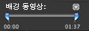

표시하려는 비디오의 일부를 지정하려면,

조절하려는 배경 비디오를 사용하는 메뉴가 iDVD 윈도우에 나타나는지 확인하십시오.

포인터를 해당 메뉴 위에 두고(선택된 단추나 텍스트 대상체가 없는 상태에서) Command-I를 눌러 메뉴 정보 윈도우를 여십시오.

루프 실행 시간 슬라이더 위에 있는 작은 삼각형을 클릭하십시오. (고객 비디오가 배경 영역에 있을 때만 삼각형이 보입니다.)
슬라이더 조절기가 배경 동영상 시작/종료 조절기(아래 참조)가 되며 슬라이더가 반으로 나누어 집니다.


슬라이더의 왼쪽 반을 이동하면 iDVD 윈도우에서 배경 비디오를 시작하려는 프레임이 나타날 때까지 동영상을 재생합니다.

배경 비디오를 끝내려는 프레임이 나타날 때까지 슬라이더의 오른쪽 반을 움직이십시오.

삼각형을 다시 클릭하여 루프 실행 시간 슬라이더로 돌아가십시오.